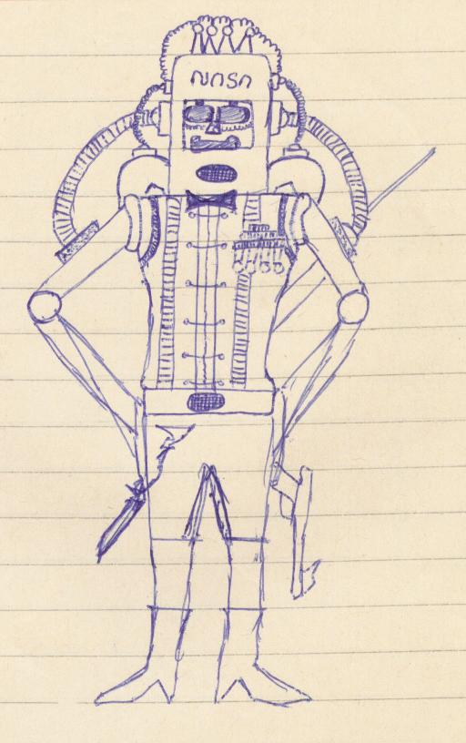
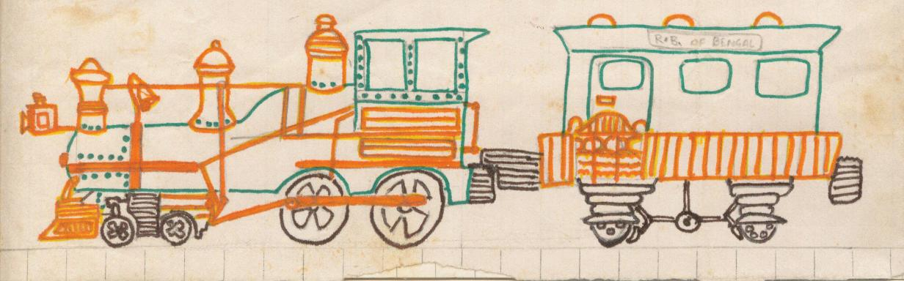

The President's Day weekend of 2001 was the culmination of an experience that began in the Thanksgiving weekend the year before. An email from one childhood friend long out of touch, Nisheeth Srivastava, led me to the remaining two childhood friends, Krishnan and Lakshminarayan, and sent me on a joyride down memory lane.
Lakshminarayan had been my friend from as long back as I remember until the last day of the public exams at the end of the 10th grade. Lakshmi left shortly thereafter for Madras, following his father's retirement. We never exchanged letters, and in the socialist India of the 1980s, long-distance telephony was out of the question. Lakshmi and I had a lot in common. We both preferred not to play any sports, something quite unusual for school-going kids, and something that bothered a lot of people around me. However, we both had vivid imaginations and we had our own little games. The clump of trees at one corner of our school was deemed the African jungle. Indeed, there was in certain seasons, enough uncut grass and weeds surrounding "the African jungle" to resemble a miniature savannah, of which we had learnt first in the geography class in 6th grade. There also ran a brickwork drainage system around the perimeter of the playing fields, which were indeed vast by any standards. The two brick walls of the channel, only about six inches wide, served as the perfect make-believe railroad, running from the other end of the field where the athletic sandpits served as our own make-believe Sahara.
I remember there were a few other friends that we picked up on our adventures, who stayed with us for but a few terms before they moved elsewhere. One such kid was Arun Dhir, a chubby boy who was with us at least through the 4th and 5th grades, although I have no recollection of when he left. The make-believe African continent was not the only thing that I remember. We designed our personal spaceships that were capable of traversing unimaginable distances and I believe at one point we did design something that could have landed on the sun itself. However, in a few years we had eased off the business of space and other explorations — much to the relief of NASA and others for whom I am sure we would have posed formidable competition.


Two pictures from an old school notebook. The first is probably a spaceman (Lakshmi had something to do with this, at least by way of inspiration); the other is obviously the train that inspired the Hogwarts Express.
By the 8th grade we were more interested in following world affairs and were dabbling in literature in some shape or form. I had taken to writing small bits of poetry — rhymes, really — but I thought of them as poetry. At one point I did write a "play" which Lakshmi and I thought should be staged as part of our weekly cultural activities. This was no humorous skit that most people did but a serious tragedy that we believed would one day run full houses worldwide and would rival Macbeth. Our other classmates were not so sure and proposed instead something that we thought was kid stuff. Outvoted and not exactly the most sporting of losers, Lakshmi and I dropped out of our maiden performances on the stage. The play that the rest of the class staged was a small success and one of the sternest of our teachers — Mrs. Sada, who was also regarded by us as the best literary critic ever — actually laughed. Lakshmi was won over, and he did tell me so. I let out a you-too-Brutus sigh then, and never again wrote another play.
Our school system was highly competitive, and we were always trying to do better than everybody else, although this competition was one of the healthiest that I have ever seen. My grades always followed a pattern: I was kind of in the middle of the form in the first term, then would feel really bad and work hard in the second and do well, ending really close to the top but never quite there. The third term would always be slightly worse than the second. Lakshmi was consistently at the top. In my ups and downs I managed to beat everyone at least once but never Lakshmi. By the 8th grade I had admitted the fact that Lakshmi was a superior being and never bothered about it. Lakshmi finished a full twenty percentage points ahead of me at the end of the 10th grade. Two years later, I saw his name on the list of students who had topped the entrance exams for the most prestigious engineering schools in India.
I guess school was very different in the 1980s in India than it has ever been in the US. We had a school uniform strictly enforced by admonishments, punitive labor and, in certain extreme cases, the rod. Ours was a boys-only school, and we were very proud of that. The neighboring girls' school, Sophia, had a unique love-hate relationship with us. We deliberately ignored them, yet none of our school events were complete without the girls showing up in their blue and white tunics and red ties with their stern-looking nuns. There were many things we took pride in — our extensive sports facilities and auditorium — while the Sophians talked no end about their swanky glass-and-steel building and their fancy science labs. My sister, who is Sophian, and I still like to argue about the two schools.
Krishnan and I never shared a classroom in our lives. We were introduced to each other by Lakshmi. Krishnan had started at St. Mary's in the 8th grade, after his father's job brought him to our little town. I remember meeting Krishnan the first time under the tamarind tree in front of the bike stand, as I sat on the seat of my bike, one foot on the ground and the other on the pedal, chatting with Lakshmi. Krishnan was a dark little boy with very sharp features and shiny white teeth that flashed easily into a wide smile. Krishnan and I shared at least some part of the way home and we rode side by side chatting. Somewhere during these rides back and forth a friendship formed that became as strong as any other during my school days.
Nisheeth came to St. Mary's in the 1st grade. As soon as he got a chance he turned back and — I remember this as vividly as if it happened yesterday — he said, "Hello. My name is Nisheeth, what is yours?" This has been the hallmark of Nisheeth's behavior ever since. I have always admired his uncanny knack at breaking the ice, at always being able to reach out to people and make friends.
The bike rides home were little adventures in themselves. We would occasionally stop on the way for an ice-cream during the summer months or cold milk at the Crystal Dairy, which has long since disappeared. There used to be a hand-pump where we stopped for a drink of cold untreated water — a treat that is no longer safe. Sometimes, if one of us discovered a flat tire, we chose some alternative way to school but always managed to get a ride back from one of the other two. One day Krishnan showed up without his bicycle and Nisheeth did not show up at all. Krishnan convinced me that I could give him a ride. The ride went really well until we came to the intersection where Krishnan could conveniently walk home. Krishnan said, "Drop me right here" and I obeyed him verbatim — tumbling to the ground, Krishnan and bike and satchels and myself. We had a good laugh all the same.
We started visiting each other's homes and spending hours just talking or playing games and eating whatever snacks the host mother would have for us. The snacks were as varied as our respective cultural backgrounds. I have memories of dosas, idlis, my introduction to coconut chutney that I did not like at the time but have since developed a liking for, coconut and molasses filled nayi-appams, murukku and papad. The snacks in Nisheeth's place were typically northern Indian — samosas and laddoos and burfis — and I guess the ones at our place had to have had my late aunt's delicious sweets, the hallmark of any Bengali meal.
The 10th grade ended with us gearing up for the 11th and 12th grades and the beginning of the rat race that would lead us — if we survived — to the hallowed portals of an engineering school. I do not remember what occasion it was, but Nisheeth and I were on the road by ourselves when we saw Krishnan walking with Auntie and his sisters. Krishnan said, "There is some news. Sudden news." Krishnan's father had just accepted a new position in Delhi and they were moving in a few weeks. He was still smiling because that was his inherent nature, to smile like sunshine through everything. There were no tearful farewells.
I moved to the United States in 1996. Krishnan, Lakshmi and Nisheeth — together with the bikes and the rides, the waiting for the bus under the tamarind tree, make-believe Africa and the spaceships to the sun, Crystal Dairy and the hand pump and the dosas, laddoos and my aunt, not to mention her sweets — turned into memories, some sweet, some bittersweet, but none bitter. They all waited dormant, for Nisheeth's email.
I found a website for St. Mary's alumni and found Nisheeth was one of the two boys registered. Then came Nisheeth's email. He was touring the US, now an entrepreneur, and happened to be going to Washington DC that afternoon. What he did not know was that I lived in Washington myself. We met for a few hours over dinner at TGIF. Nisheeth ordered a martini, which surprised me, more in a contemplative way. The last time we had shared a meal we had not even attained drinking age. Nisheeth led me to Krishnan, who was living in New Jersey, and Krishnan provided me Lakshmi's number. Suddenly my age was halved, because I was back with my boyhood friends, under the tamarind tree.
Krishnan and I who live only about four hours apart had been planning to meet since the day after Thanksgiving. This weekend an opportunity arose. Meenakshi, Arpita and I made the trip to Krishnan's place, missing turns four times out of a possible six, then negotiating New Jersey's notorious jug-handle intersections until my poor little Honda Accord belched and grunted its way up the hill that led to Krishnan's home. The door opened and there was Krishnan and his hallmark smile. The three hours passed fast between the flow of words and mouthfuls of Raji's dosas, sambar and coconut chutney — the same I had first eaten at Krishnan's home a decade and a half ago.
This was the culmination that I talked about when I started writing today. Just like the memories from the boyhood days, this writing is hard to suppress, and it can go on for hours, unchecked, as it already has. The time warp has snapped and I am back in today's world. Yet the recent communications with Krishnan, Lakshmi and Nisheeth, and the rejuvenation of our boyhood friendship, has in a way rejuvenated me. At the bottom of my heart I would continue to feel like the little boy who rode a little red bike with two other little boys and hiked through a make-believe savannah to a make-believe rainforest with another little boy.